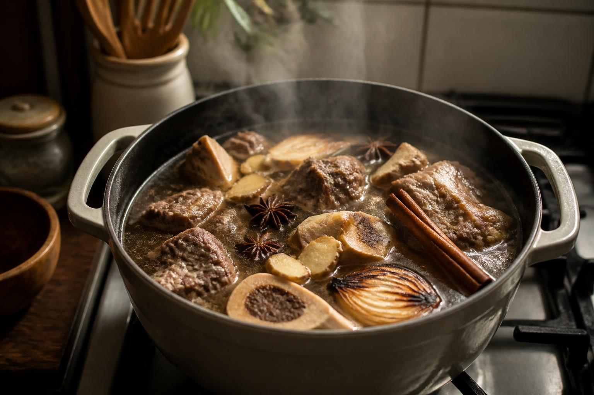

← Back to recipes

Phở Bắc
Northern-Style Beef Phở
From Mẹ — Kim Oanh
Nguyên liệu · Ingredients
- 3 lbs beef marrow bones
- 2 lbs beef brisket or chuck
- 1 large onion, halved
- 4-inch piece of ginger, halved lengthwise
- 5 star anise
- 4 whole cloves
- 1 cinnamon stick
- 1 tablespoon coriander seeds
- 3 tablespoons fish sauce (nước mắm), or to taste
- 1 tablespoon rock sugar (đường phèn)
- 1 lb dried flat rice noodles (bánh phở)
- Salt to taste
Rau sống · Garnishes
- Thinly sliced raw beef (for serving)
- Fresh bean sprouts (giá)
- Thai basil (húng quế)
- Fresh cilantro
- Thinly sliced onion
- Thinly sliced scallions
- Lime wedges
- Hoisin sauce and sriracha (on the side)
Cách làm · Instructions
- Parboil the bones: Place beef bones in a large stockpot, cover with cold water, and bring to a rolling boil. Boil for 10 minutes, then drain and rinse the bones under cold water. Clean the pot. This removes impurities for a clear broth — Mẹ was very particular about this.
- Char the onion and ginger: Place the halved onion and ginger cut-side down directly on the gas flame (or under a broiler) until deeply charred and fragrant, about 3–4 minutes per side. Rinse off the loose charred bits.
- Toast the spices: In a dry pan over medium heat, toast the star anise, cloves, cinnamon stick, and coriander seeds until fragrant, about 2 minutes. Place in a spice bag or cheesecloth pouch.
- Build the broth: Return the cleaned bones and brisket to the pot. Add the charred onion and ginger, the spice bag, and enough cold water to cover by 2 inches (about 6 quarts). Bring to a gentle boil over medium-high heat.
- Simmer low and slow: Reduce heat to the lowest setting. The surface should barely ripple. Skim any foam that rises. Mẹ would skim every hour — "Nước trong là được." When the broth is clear, it's ready.
- After about 1.5 hours, remove the brisket and set aside (it should be tender but not falling apart). Continue simmering the broth for at least 4 more hours — Mẹ went 6 to 8.
- Season the broth: Add fish sauce, rock sugar, and salt to taste. The broth should be deeply savory but clean-tasting. Remove the spice bag, onion, ginger, and bones.
- Prepare the noodles: Cook the dried rice noodles according to package directions. Drain and divide among large bowls.
- Assemble: Slice the brisket thinly against the grain. Lay brisket slices and raw beef slices over the noodles. Ladle the boiling hot broth over everything — it will cook the raw beef instantly. Top with sliced onion and scallions.
- Serve with the garnish plate on the side. Let everyone build their own bowl.
Mẹ's tip
"Never let it boil hard after the first hour. A gentle simmer keeps the broth clear. If you rush it, you'll taste the difference." She also never added bean sprouts or herbs directly — those went on a separate plate so each person could add their own.
❦
In loving memory of
Mẹ — Kim Oanh